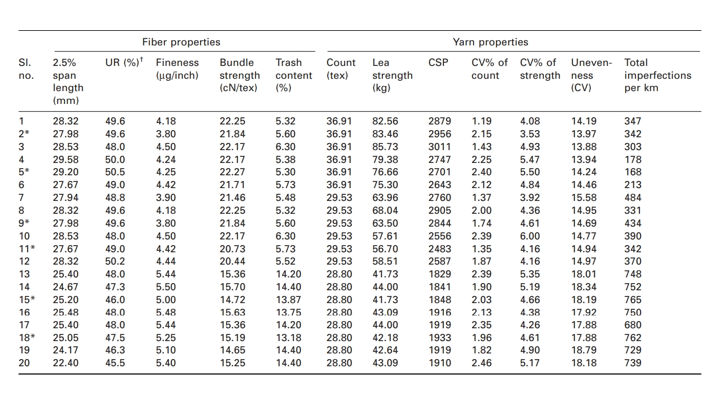

Procedure
1. Collect the data from industries.
| Sr.no | It should contains fibre properties like | and yarn properties should be like |
|---|---|---|
| a | 2.5% span length(in mm) | count(tex) |
| b | Uniformity Ratio(%) | lea strength(kg) |
| c | fineness (µg/inch) | CSP |
| d | Bundle strength (cN/tex) | CV % of count |
| e | trash content(%). | CV% of strength, |
Data Sample from Industry
2.Designing a neural network.
2.1 We need to use different python libraries like numpy, pandas, keras,
tensorflow, matplot,
streamlit, etc
to design a neural network and prediction results format.
2.2 To create a proper responsive and functional web application for this
prediction,
we will work with different scripting languages like HTML, CSS, JavaScript and
tools like git and github to deploy this web app on web server.
3. Give data of required properties to neural network as a input on web application.
4. We will get predicted yarn data of yarn properties.